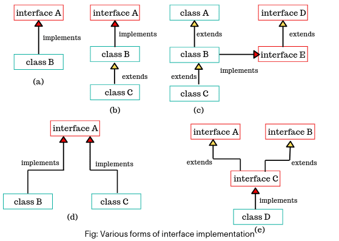
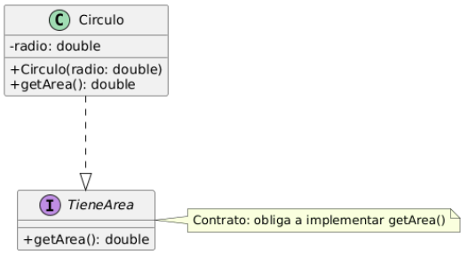

Una interfaz en Java define un tipo y un contrato de comportamiento. Se parece a una clase, pero su intención es declarativa: describe qué debe ofrecer una clase, no necesariamente cómo lo hace.
interface (en un archivo .java).new sobre una interfaz).public static final).Referencia (tutorial oficial): Creating Interfaces (Oracle)

Una interfaz declara métodos (normalmente abstractos). Una clase la implementa
con implements y debe proporcionar el código de esos métodos.
| Elemento | Ejemplo | Nota |
|---|---|---|
| Declaración de interfaz |
|
Método abstracto (contrato). |
| Clase que implementa |
|
Si no implementa, debe ser abstract. |
| Implementación múltiple |
|
Una clase puede implementar tantas interfaces como necesite. |
Una interfaz puede extender otras interfaces con extends.
Esta herencia también es múltiple.
public interface A { }
public interface B { }
public interface C extends A, B { }C hereda los miembros (métodos y constantes)
de A y B.
Además de métodos abstractos, desde Java 8 las interfaces pueden tener:
default
Útil para mantener compatibilidad en APIs: se añade funcionalidad sin obligar a reescribir todas las clases que ya implementaban la interfaz.
public interface Coloreado {
Color getColor();
default Color getColorInverso() {
Color c = getColor();
return new Color(255 - c.getRed(),
255 - c.getGreen(),
255 - c.getBlue());
}
}static
Se llama sobre la propia interfaz (no sobre objetos).
public interface Utilidades {
static void saludar(){
System.out.println("Hola");
}
}
// Uso:
Utilidades.saludar();Referencias oficiales: Default Methods (Oracle)
Una interfaz funcional tiene un único método abstracto.
Se suele marcar con @FunctionalInterface.
@FunctionalInterface
public interface Operacion {
int aplicar(int a, int b);
}Esto permite usar lambdas:
Operacion suma = (a, b) -> a + b;
System.out.println(suma.aplicar(2, 3)); // 5java.util.function (por ejemplo Predicate, Function, Consumer).
Referencias oficiales: @FunctionalInterface · java.util.function
Comparable<T> define el orden natural de una clase,
mediante el método compareTo(T o).
Comparable<Persona> (evita casts y errores).
public class Persona implements Comparable<Persona> {
private int edad;
@Override
public int compareTo(Persona otra) {
return this.edad - otra.edad; // orden por edad
}
}Convención del resultado:
this va antesthis va después
Se usa en ordenaciones como:
Arrays.sort() y Collections.sort().
Referencia oficial: Comparable (Java SE 8)
Comparator<T> permite definir órdenes alternativos
sin modificar la clase.
Comparator<Persona> porNombre =
(p1, p2) -> p1.getNombre()
.compareTo(p2.getNombre());Comparator<Persona> porEdad =
Comparator.comparing(Persona::getEdad);
Comparator<Persona> porEdadDesc =
Comparator.comparing(Persona::getEdad)
.reversed();Para ordenar:
Arrays.sort(personas, porNombre);
Collections.sort(lista, porEdadDesc);Referencia oficial: Comparator (Java SE 8)
default y static existen desde Java 8.Comparable → orden natural.Comparator → orden alternativo.StringBuilder para concatenaciones y, en cambio,
para ordenar colecciones se usan Comparable/Comparator?